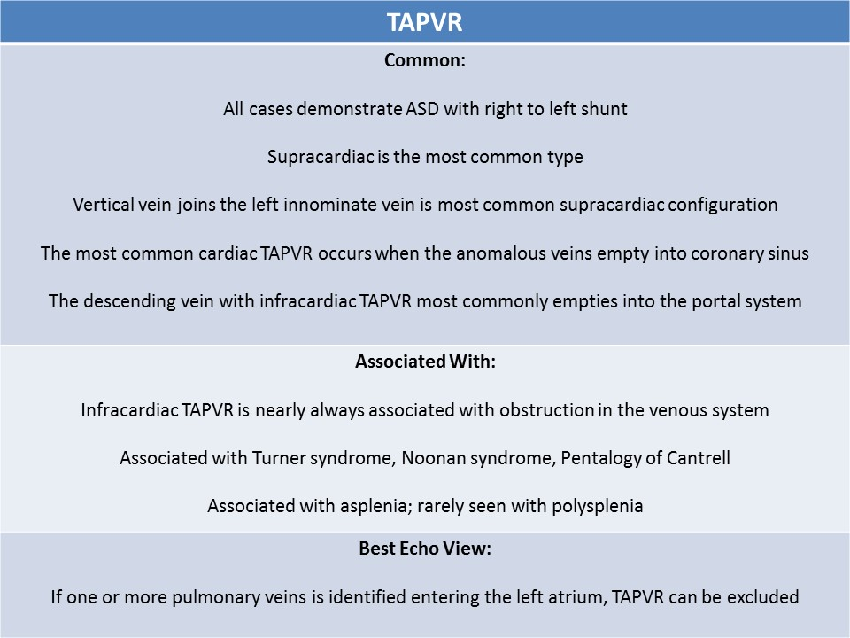

.jpg)
anomalous pulmonary venous return
(TApvr/papvr)
TOTAL ANOMALOUS PULMONARY VENOUS RETURN
General Information:- Caused by interruption in development in the common pulmonary vein in early pregnancy
- Pulmonary veins drain into the right atrium directly or indirectly
- All cases have right to left atrial shunt
- Associated with asplenia and Turner syndrome
- Affects about 1/18000 live births
- Cyanosis usually occurs at birth when pulmonary venous flow is obstructed
- Foramen ovale must remain patent and unrestricted after birth for the baby to survive
- If no pulmonary venous obstruction is present and foramen ovale is patent, patient can live until age 40-50yrs without problem
- Fetal or neonatal death usually occurs due to other related cardiac defects

Craig Classification:- Type I: Supracardiac(supradiaphragmatic)
- Most common form
- Pulmonary venous flow drains into the innominate or superior vena cava
- The four pulmonary veins form a confluence posterior to the left atrium
- A vertical vein originates from the left side of the confluence and courses cephalad
- The vertical vein courses anterior to the left main bronchus and left pulmonary artery to join the left innominate vein
- Less commonly, the vertical vein originates from the right side of the confluence and joins the SVC (Strong correlation with other CHD)
- Pulmonary venous flow is rarely obstructed
- Type II: Cardiac
- Pulmonary veins drain into the coronary sinus(most common) or right atrium
- Type III: Infracardiac(infradiaphragmatic)
- Pulmonary veins drain into the portal veins (or inferior vena cava)
- The four pulmonary veins form a confluence posterior to the left atrium
- A descending vein originates at the confluence and courses anterior to the esophagus
- In 80% of cases the descending vein joins the portal venous system at the portal confluence
- Pulmonary venous flow is commonly obstructed
- Type IV: Mixed
- Least common
- Connections occur at two or more of supracardiac, cardiac and infradiaphragmatic locations
- Most commonly the left pulmonary veins drain into a vertical vein connected to the innominate vein and the right pulmonary veins drain into the coronary sinus
- Pulmonary veins can drain into the center of common atrium (heterotaxy)
- Pulmonary veins can drain into the right atrium secondary to the malalignment of the interatrial septum
- About 50% have obstructed pulmonary venous flow, usually caused by extrinsic compression from surrounding structures
- After birth, an infant with TAPVR will be critically ill, if there is an obstruction to pulmonary venous return
- Increased right heart flow volume and a significant portion of the venous return drains across the foramen ovale
- All forms of anomalous pulmonary venous connection are associated with the formation of a pulmonary confluence
- The confluence is located posterior to the left atrium, common atrium, anterior to the descending aorta
- The cardinal (vertical) vein can be followed to supradiaphragmatic or infradiaphragmatic connection
PARTIAL ANOMALOUS PULMONARY VENOUS RETURN
- One or two pulmonary veins drain into the right atrium or systemic veins
- ASD and persistent left SVC are most commonly seen with PAPVR
- Type 1
- Most common
- Right pulmonary veins drain into the right atrium through the SVC
- Left pulmonary veins drain into left atrium (normal)
- Sinus venosus VSD is common
- Type 2
- Right pulmonary veins drain into the right atrium through the IVC
- Left pulmonary veins drain into left atrium (normal)
- No ASD but normal foramen ovale present
- Associated with hypoplasia of the right lung and pulmonary artery, dextroposition and other cardiac abnormalities
- Type 3
- Left pulmonary veins drain into the left innominate vein
- Right pulmonary veins drain into the left atrium, coronary sinus, IVC, SVC
- Ostium secundum defect is common
- Associated with polysplenia, Turner syndrome, Noonan syndrome
- Type 4
- Left pulmonary veins drain into the coronary sinus, IVC, SVC, right atrium
- Right pulmonary veins drain into left atrium (normal)
- Scimitar syndrome(hypoplastic right lung): associated with anomalous right lower veins, can be present with VSD, TOF, COA
- Right and left superior pulmonary veins can be demonstrated entering the left atrium on the apical or subcostal view
- If one or more pulmonary veins is identified entering the left atrium, TAPVR can be excluded
- Without identifying all 4 pulmonary veins entering the left atrium, PAPVR cannot be excluded
- If pulmonary veins can be seen entering both atria, PAPVR diagnosed
- The superior pulmonary veins are most likely to be seen on fetal echo
- The inferior pulmonary veins are difficult to visualize on fetal echo
- Atrial septal defect: right to left shunting
- Small left atrium
- Dilated right heart relative to the left heart (four chamber view)
- SVC enlarged compared to aorta on 3 vessel view
- Confluence located posterior to the left atrium
- NO pulmonary venous flow seen into the left atrium with TAPVR